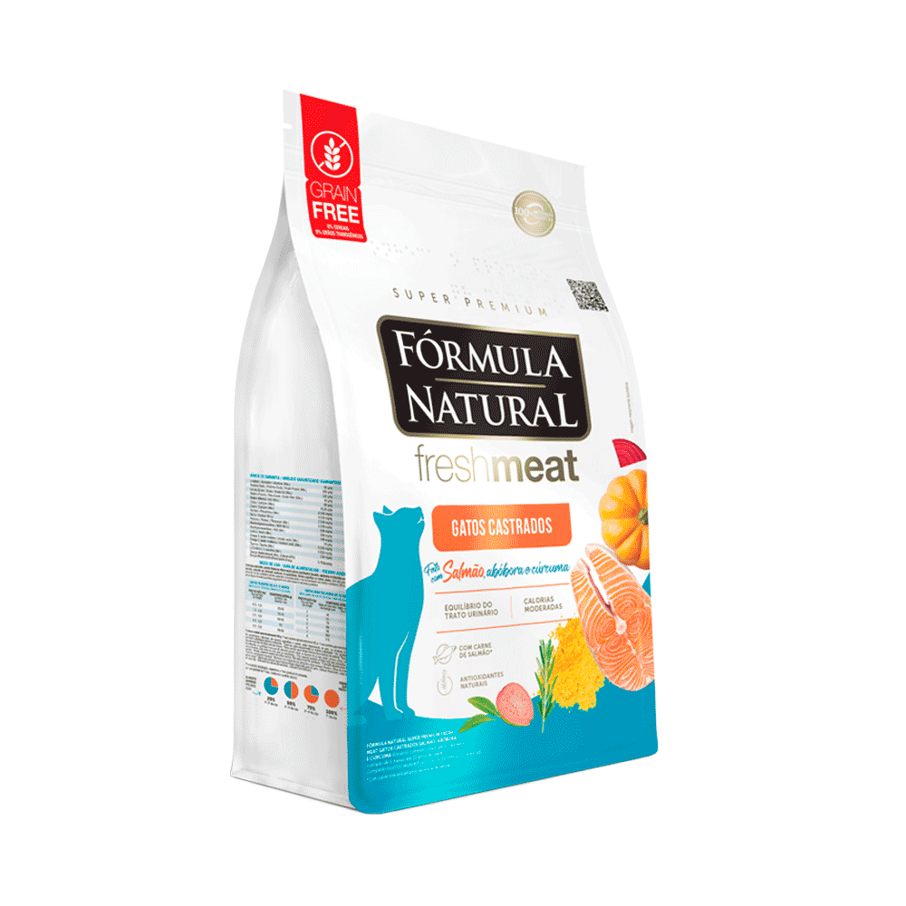

Ração Fresh Meat para Gatos Castrados

Ração premium com ingredientes selecionados, ideal para gatos adultos e castrados, promovendo saúde e bem-estar.
- Ingredientes: carne fresca, vitaminas e minerais
- Tamanho: 7 kg
- Sem corantes ou conservantes artificiais
- Indicado para gatos castrados
Preço: R$ 259,90 (pacote de 1 kg)